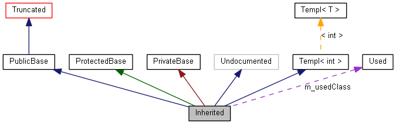

Erklärung des Graphen
Diese Seite erklärt die Interpretation der von doxygen erzeugten Graphen.
Beispiel:
/*! Wegen Verkürzung unsichtbare Klasse */
class Invisible { };
/*! Klasse verkürzt dargestellt, Vererbungsbeziehung ist versteckt */
class Truncated : public Invisible { };
/* Nicht mit doxygen-Kommentaren dokumentierte Klasse */
class Undocumented { };
/*! Mithilfe öffentlicher Vererbung vererbte Klasse */
class PublicBase : public Truncated { };
/*! Eine Template-Klasse */
template<class T> class Templ { };
/*! Mithilfe geschützter Vererbung vererbte Klasse */
class ProtectedBase { };
/*! Mithilfe privater Vererbung vererbte Klasse */
class PrivateBase { };
/*! Von der Klasse Inherited benutzte Klasse */
class Used { };
/*! Superklasse, die von mehreren anderen Klassen erbt */
class Inherited : public PublicBase,
protected ProtectedBase,
private PrivateBase,
public Undocumented,
public Templ<int>
{
private:
Used *m_usedClass;
};
Dies liefert den folgenden Graphen:

Die Rechtecke in obigem Graphen bedeuten:
- Ein grau gefülltes Rechteck stellt die Struktur oder Klasse dar, für die der Graph erzeugt wurde.
- Ein Rechteck mit schwarzem Rahmen kennzeichnet eine dokumentierte Struktur oder Klasse.
- Ein Rechteck mit grauem Rahmen kennzeichnet eine undokumentierte Struktur oder Klasse.
- Ein Rechteck mit rotem Rahmen kennzeichnet eine dokumentierte Struktur oder Klasse, für die nicht alle Vererbungs-/Enthaltenseinsbeziehungen dargestellt werden. Ein Graph wird gekürzt, wenn er nicht in die angegebenen Schranken passt.
Die Pfeile bedeuten:
- Ein dunkelblauer Pfeil stellt eine öffentliche Vererbungsbeziehung zwischen zwei Klassen dar.
- Ein dunkelgrüner Pfeil stellt geschützte Vererbung dar.
- Ein dunkelroter Pfeil stellt private Vererbung dar.
- Ein gestrichelter violetter Pfeil bedeutet, dass eine Klasse in einer anderen enthalten ist oder von einer anderen benutzt wird. Am Pfeil stehen die Variable(n), mit deren Hilfe auf die Struktur oder Klasse an der Pfeilspitze zugegriffen werden kann.
- Ein gestrichelter gelber Pfeil kennzeichnet eine Verknüpfung zwischen einer Template-Instanz und der Template-Klasse von welcher es abstammt. Neben dem Pfeil sind die Template-Parameter aufgeführt.